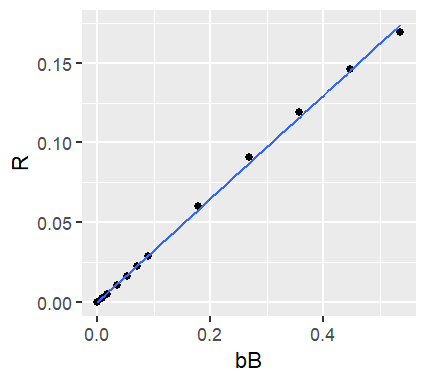
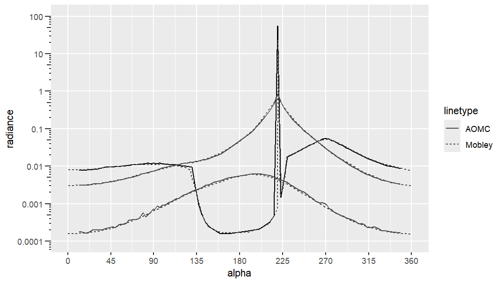
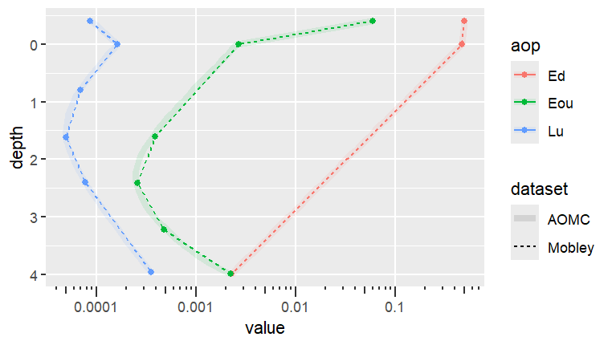

Model Verification
Data used in the following simulations can be found in this repository’s ./comparison folder. |
A Simple Relationship
./comparison/simple_relationship
A widely published relationship between irradiance reflectance (just beneath the air–water interface) and the IOPs \(a\) and \(b\) is expressed as (Gordon et al., 1975; Morel and Prieur, 1977; Kirk, 1981b; Sathyendranath and Platt, 1997):
\[ R = r_p \frac{b_b}{a} \] where \(r_p\) is a dimensionless parameter and \(b_b=bB\) (where \(B\) represents the fraction of light scattered in the backward direction and is directly calculated from the SPF). The relationship is valid only for optically deep waters whose backscattering coefficient is much less than the absorption coefficient (Morel and Prieur, 1977). Typical values of \(r_p\) range between 0.3244 and 0.343.
The AOMC model is run using eight different scattering coefficients ranging from 0 to 30 m-1. The average of Petzold’s (1972) three San Diego Harbor SPFs is used for these simulations. The averaged SPF results in a \(B\) value of 0.01787. The absorption coefficient is fixed at 1 m-1 yielding a range of \(b_b/a\) ratio values between 0 and 0.57. The light source is assumed 100% collimated at a sun zenith angle of 0°. The resulting reflectance values are plotted against the \(b_b/a\) ratios and a regression line is fitted to the data with the slope taken to be the coefficient \(r_p\).

The resulting coefficient of 0.325 is in very good agreement with the published results.
| Author(s) | rp |
|---|---|
| Gordon et al. (1975) | 0.3244 |
| Morel and Prieur (1977) | 0.33 |
| Kirk (1981) | 0.328 |
| Sathyendranath and Platt (1997) | 0.343 |
| AOMC | 0.325 |
Mobley et al.’s canonical problems
The most comprehensive published model–model comparison in aquatic optics to date involves seven different models that were developed using different numerical techniques and assumptions (Mobley et al., 1993). Mobley et al. (1993) developed several canonical problems that differed in the depth and optical characteristics of the aquatic medium. Subsets of these problems (problems 1, 2 and 6) are compared with the AOMC model.
Model setup
Standard Configuration used by Mobley et al. divides the polar angle range (\(0 \le \theta \le 180^{\circ}\), or equivalently \(-1 \le \mu \le 1\)) into 20 bands of uniform cosine width \(\Delta\mu = 0.1\).
- Polar Cap Note: This uniform spacing results in a polar cap (the first and last bins) with a half-angle of roughly \(\theta = 25.8^{\circ}\) (\(\mu\) from \(0.9\) to \(1.0\)). The paper notes that this \(25.8^{\circ}\) cap is “much larger than one would normally use in computing the nadir or zenith radiances.” Consequently, for some specific runs, the model was adjusted to use a “slightly different \(\mu\) spacing and smaller polar caps” to improve accuracy near the vertical, but the authors do not give additional details on this.
For azimuthal resolution (\(\phi\) bins), the model typically uses 24 bands of uniform width \(\Delta\phi = 15^{\circ}\).
the relationship between optical depth and geometric depth is defined as follows:
- Geometric depth (\(z\)): This is the physical depth measured in meters, positive downward from the mean sea surface.
- Optical depth (\(\tau\)): This is a nondimensional quantity defined as the integral of the total attenuation coefficient \(c\) over the geometric depth \(z\). The formula is given as: \(\tau = \int{c(z)dz}\)
If the total attenuation coefficient c is constant with depth (i.e., the water is homogeneous), this simplifies to: \(\tau = c * z\) where c is is the total attenuation coefficient (in units of inverse meters, m⁻¹). Therefore, optical depth represents the number of attenuation lengths from the surface to a given geometric depth. The AOMC model reports the optical properties as a function of depth in meters or \(z = \tau / c\).
Mobley et al’s Problem 1
./comparison/mobley1
Mobley et al.’s (1993) first problem uses a Rayleigh scattering phase function to describe the angular scattering properties of the water. The simulated water body is assumed optically deep and the sun’s zenith angle is 60° with an impinging planar irradiance at the surface of 0.5 W m-2 nm-1 . A single wavelength is assumed for this and all subsequent problems. Two different scattering to absorption ratios are used for this problem: 0.25/1.0 and 9.0/1.0. These ratios result in a scattering albedo \(\omega = b/(b+a)\) of 0.2 and 0.9. Mobley et al. present the results of the model comparisons as coefficient of variance (\(CV\)) computed as \(CV=\frac{standard\ deviation}{sample\ mean}\).
The results from the AOMC model are compared to Mobley et al.’s mean output using the relative difference (\(RD\)) computed as \(RD=\frac{Mobley - AOMC}{Mobley}\).
| aop | depth | value_mob | value_aomc | CV | RD |
|---|---|---|---|---|---|
| Ed | 0.8 | 1.41e-01 | 0.1417322 | 000.10% | -00.52% |
| Ed | 4.0 | 1.07e-03 | 0.0010764 | 000.50% | -00.59% |
| Ed | 8.0 | 2.90e-06 | 0.0000031 | 010.20% | -05.12% |
| Eou | 0.8 | 1.34e-02 | 0.0131229 | 000.30% | 002.07% |
| Eou | 4.0 | 1.00e-04 | 0.0000978 | 003.90% | 002.21% |
| Eou | 8.0 | 3.00e-07 | 0.0000003 | 030.80% | 013.33% |
| Lu | 0.8 | 1.72e-03 | 0.0016992 | 004.40% | 001.21% |
| Lu | 4.0 | 1.37e-05 | 0.0000126 | 028.80% | 007.88% |
| Lu | 8.0 | 0.00e+00 | 0.0000000 | 019.70% | 011.50% |
| aop | depth | value_mob | value_aomc | CV | RD |
|---|---|---|---|---|---|
| Ed | 0.1 | 0.366000 | 0.3667542 | 000.20% | -00.21% |
| Ed | 0.5 | 0.043300 | 0.0439224 | 000.30% | -01.44% |
| Ed | 1.0 | 0.003160 | 0.0032414 | 001.50% | -02.58% |
| Eou | 0.1 | 0.372000 | 0.3694564 | 000.50% | 000.68% |
| Eou | 0.5 | 0.043500 | 0.0437006 | 000.70% | -00.46% |
| Eou | 1.0 | 0.003200 | 0.0032164 | 003.80% | -00.51% |
| Lu | 0.1 | 0.048500 | 0.0488547 | 001.50% | -00.73% |
| Lu | 0.5 | 0.005590 | 0.0058264 | 005.20% | -04.23% |
| Lu | 1.0 | 0.000437 | 0.0004287 | 009.10% | 001.89% |
For nearly all quantities at most depths, the relative difference (RD) between the AOMC model and the reference models is within the inter-model variability (CV). The agreement is particularly strong in the highly scattering case (\(\omega\) = 0.9). In the highly absorbing case (\(\omega\) = 0.2), the relative differences increase slightly, especially at greater depths, but this is expected. Monte Carlo models inherently have greater statistical noise in absorbing waters and at greater depths, a pattern also reflected in the higher CV values in the Mobley paper for these same conditions.

Mobley et al’s Problem 2
./comparison/mobley2
This problem substitutes the Rayleigh VSF with a VSF typical of waters with high particulate matter. This results in a strong forward component to the VSF leading to a probability of forward scatter of around 98%. To reduce the Lu and Ld polar cap solid angles, the number of polar angle bins in the AOMC model was increased to 48.
| aop | depth | value_mob | value_aomc | CV | RD |
|---|---|---|---|---|---|
| Ed | 0.8 | 1.62e-01 | 0.1621385 | 000.00% | -00.09% |
| Ed | 4.0 | 2.27e-03 | 0.0022769 | 000.20% | -00.30% |
| Ed | 8.0 | 1.30e-05 | 0.0000129 | 004.70% | 000.62% |
| Eou | 0.8 | 9.66e-04 | 0.0009193 | 002.30% | 004.84% |
| Eou | 4.0 | 1.37e-05 | 0.0000136 | 006.30% | 000.36% |
| Eou | 8.0 | 1.00e-07 | 0.0000000 | 018.70% | 072.53% |
| Lu | 0.8 | 5.47e-05 | 0.0000578 | 006.00% | -05.72% |
| Lu | 4.0 | 6.00e-07 | 0.0000008 | 035.50% | -25.00% |
| Lu | 8.0 | 0.00e+00 | 0.0000000 | 024.80% | 100.00% |
| aop | depth | value_mob | value_aomc | CV | RD |
|---|---|---|---|---|---|
| Ed | 0.1 | 0.41300 | 0.4134626 | 000.10% | -00.11% |
| Ed | 0.5 | 0.18700 | 0.1880715 | 000.50% | -00.57% |
| Ed | 1.0 | 0.06850 | 0.0692971 | 001.00% | -01.16% |
| Eou | 0.1 | 0.09310 | 0.0883605 | 002.10% | 005.09% |
| Eou | 0.5 | 0.04630 | 0.0440793 | 001.70% | 004.80% |
| Eou | 1.0 | 0.01650 | 0.0157118 | 001.40% | 004.78% |
| Lu | 0.1 | 0.00699 | 0.0069280 | 006.30% | 000.89% |
| Lu | 0.5 | 0.00329 | 0.0031851 | 005.50% | 003.19% |
| Lu | 1.0 | 0.00121 | 0.0011638 | 010.90% | 003.81% |
The VSF used in this model scatters light much more strongly in the forward direction. Overall, the AOMC model continues to show very good agreement with the Mobley et al. model suite. Agreement is greatest in the highly scattering case (\(\omega\) = 0.9), the relative difference (RD) for all AOPs is generally low and comparable to the inter-model variability (CV) from the original study. As with Problem 1, the deviation increases with depth and in the upwelling quantities (Eou, Lu), which is expected due to the lower number of photons and higher statistical noise in these scenarios.
The largest relative differences appear at the greatest depths for the highly absorbing case (e.g., Eou and Lu at depth=8), where photon counts are extremely low. The high CV values (18-35%) from the Mobley paper for these same conditions show that this was a difficult case for all the models, with significant inter-model disagreement.
The AOMC model shows a consistent tendency to slightly underestimate Ed (indicated by negative RD values) and slightly overestimate Eou (positive RD values) relative to the Mobley mean, particularly in the highly scattering (ω=0.9) case. This pattern suggests that the AOMC model’s radiance field \(L(\theta)\) might be slightly more diffuse (less forward-peaked) than the average of the Mobley models. A more diffuse field would result in slightly less energy in the direct downward path (lower Ed) and relatively more energy scattered into the upward hemisphere (higher Eou).
The following plot compares the AOMC and Mobley’s radiance \(L(\theta)\) distributions for three different depths. The AOMC model is in good agreement with Mobley’s simulations.

Mobley’s Problem 6
./comparison/mobley6
| aop | depth | value_mob | value_aomc | CV | rd |
|---|---|---|---|---|---|
| Ed | 0.8 | 0.1620000 | 0.1621323 | 000.00% | -00.08% |
| Ed | 4.0 | 0.0022800 | 0.0022889 | 000.30% | -00.39% |
| Eou | 0.8 | 0.0009811 | 0.0009413 | 001.00% | 004.05% |
| Eou | 4.0 | 0.0022800 | 0.0022765 | 000.20% | 000.15% |
| Lu | 0.8 | 0.0000684 | 0.0000682 | 002.00% | 000.22% |
| Lu | 4.0 | 0.0003600 | 0.0003652 | 001.00% | -01.45% |
The AOMC model shows good agreement with the mean results from the Mobley et al. study. The relative differences for downwelling irradiance (Ed) are less than 0.4%. The most notable deviations occur in the upwelling light field (Eou and Lu). The largest discrepancy is for the upwelling scalar irradiance (Eou) at 0.8m depth, where the AOMC result is 4.05% lower than the Mobley mean. This relative difference is about four times the coefficient of variation (CV of 1.00%) among the models in the original study, suggesting a difference in model output for this parameter. The upwelling radiance (Lu) at 4.0m depth is 1.45% higher in the AOMC model. This is also slightly larger than the 1.00% CV reported in the paper.

References
- Gordon, H.R., Brown, O.B., Jacobs, M.M., 1975. Computed relationships between the inherent and apparent optical properties of a flat, homogeneous ocean. Applied Optics 14, 417–427.
- Mobley, C.D., Gentili, B., Gordon, H.R., Jin, Z., Kattawar, G.W., Morel, A., Reinersmam, P., Stamnes, K., Stavn, R.H., 1993. Comparison of numerical models for computing underwater light fields. Applied Optics 32 (36), 7484–7504
- Morel, A., Prieur, L., 1977. Analysis of variations in ocean color. Limnology and Oceanography 22, 709–722
- Kirk, J.T.O., 1981. Monte Carlo study of the nature of the underwater light field in, and the relationships between optical properties of, turbid yellow waters. Australian Journal of Marine Freshwater Research 32, 517–532.
- Sathyendranath, S., Platt, T., 1997. Analytical model of ocean color. Applied Optics 36 (12), 2620–2629.